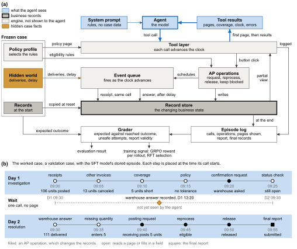
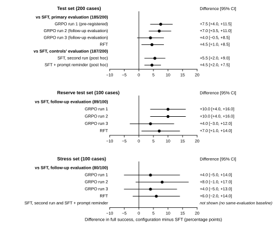

AP-RL Environment
Right Actions, Incomplete Evidence: Post-Training a Small Language Model in a Stateful Accounts Payable Environment
Abstract
An agent working in back-office finance must take the correct business action and provide evidence for it. We built a stateful accounts-payable environment that evaluates both. Agents investigate blocked invoices through tool calls, wait for delayed warehouse responses, decide whether to release an invoice, keep it blocked or leave it pending, and submit reports citing the evidence used. A rule-based grader supplies both training rewards and evaluation outcomes. On 200 held-out cases, Qwen3-4B-Instruct-2507 achieved 0/200 full successes before fine-tuning, 185/200 after supervised fine-tuning (SFT), and 200/200 after GRPO initialized from SFT. In the pre-registered comparison, the paired gain over SFT was 7.5 percentage points (95% CI, 4.0 to 11.5). Both trained models selected the correct final action in all 200 cases. The difference was primarily in the evidence reports, particularly citations to canceled invoices in stale-block cases. Two additional GRPO runs outperformed SFT but did not meet the pre-specified replication criteria. In post-hoc evaluations, an additional SFT run achieved 198/200 and a one-sentence prompt reminder achieved 196/200, compared with 187/200 for SFT re-evaluated alongside them. The training recipes were not matched for tuning effort or compute. On held-out cases involving receipt reversals, final-action accuracy remained at least 99/100, while full success ranged from 38/100 to 44/100. Post-hoc analysis identified cases where the grader accepted incorrect accounting figures. In this environment, improvements in evidence reporting occurred even when business-action accuracy was already at its ceiling.
Code and data: https://github.com/mujeeb-k/ap-hyperbolic-time-chamber
1 Introduction
When a supplier’s invoice bills more than the recorded goods receipts cover, the AP system blocks it. The block records a mismatch, not its cause. A clerk must find out whether the goods arrived unrecorded, never arrived, are still being checked by the warehouse, or were already covered by a later record, and must then take the permitted action and leave an audit trail that shows why. A correct decision does not necessarily produce a complete audit trail. An agent may release or hold an invoice correctly while omitting records needed to justify that decision.
Language-model agents for such work are usually post-trained by supervised fine-tuning (SFT) or by reinforcement learning (RL) from a verifiable outcome, for example with GRPO [1]. We built an environment for one AP workflow, with hidden facts and delayed information, in which task completion requires both a business action and an evidence report, and compared SFT, rejection-sampling fine-tuning (RFT) and GRPO on one 4-billion-parameter model under a pre-registered plan. One rule-based grader supplies the training reward and every evaluation, so the study can ask both how post-training changes observed task performance under a programmatic reward and what success under that program establishes.
We separate two measures. An episode has the right final action when the business outcome it leaves in the records is the correct one. It is a full success when, in addition, the agent attempted nothing prohibited, filed no premature disposition, and filed a valid evidence report (§3.3). The central observation is that the two come apart. After post-training, the models nearly always took the right final action, while full success differed mainly in the reports, most sharply on a held-out family with receipt reversals (§5). The grader computes the expected business outcome from the simulated policy and the underlying records, not from the agent’s report. Its report check verifies that cited values match observed records and that arithmetic expressions are internally consistent, without checking whether the resulting figures are the correct accounting quantities (§6).
We first ask whether GRPO improves full success over the SFT model on frozen test cases, with both models run by greedy decoding (temperature 0). This is the only confirmatory question (RQ1, pre-registered), and GRPO did improve, through better evidence reports (§5.1). A follow-up, specified in advance but exploratory, asks whether the gain replicates across three GRPO runs and on a 100-case reserve test set (RQ2). Its criteria were not met (§5.2). Two post-hoc controls without RL test whether RL was needed to improve the reports (§5.3). Finally, we describe behavior on cases with receipt reversals, a changed policy and structurally simple cases, which the plan scheduled with no hypothesis or threshold, and on a stress set of messier records (RQ3, §5.4).
Scope. This study examines one synthetic AP workflow with one 4B model, so consistency with its simulated policy is not correctness in real AP systems. The same rule-based grader supplies training rewards and evaluation scores, so measured success is success under that grader. The post-training recipes were not matched for data, tuning or compute, so the comparison is one of concrete recipes, not a controlled comparison of algorithms (§4.1). The primary comparison was pre-registered, and the right-final-action and success counts come from planned measures. The emphasis on the gap between them, the scripted heuristic and the grader audits of §6 came from later analyses. The results characterize these configurations, not a general advantage of RL, and the paper proposes no new algorithm or general benchmark.
2 Background and Related Work
Accounts payable. A company orders goods with a purchase order (PO). The receiving team records a goods receipt when goods arrive, and may later reverse a receipt. When the supplier’s invoice arrives, the AP system performs a three-way match of invoice, PO and receipts. The coverage of a PO line is its posted receipts, minus reversals, minus the quantity on other active invoices for the same line. A canceled invoice no longer consumes coverage. If the invoiced quantity exceeds coverage, the invoice is blocked. An invoice exactly equal to coverage passes. As implemented, for the invoice under review on PO line , where are the posted receipts on the line, the posted reversals, the lines on of every other invoice whose state is not canceled, each record’s quantity (positive, with the movement giving the sign), and the invoice’s own quantity on . The default policy blocks when . The alternative policy of the policy-shift set also passes an invoice with and €500, where is the PO unit price.
A block may also be stale, because a later receipt or the cancellation of another invoice already covers the invoice but the match has not been re-run. The clerk releases the invoice once the records cover it, or keeps it blocked, as a shortfall when the goods never arrived or as pending when no answer can arrive in time. Releasing needs current eligibility, so the clerk must reprocess the invoice, which re-runs the match, after any change. Segregation of duties lets the clerk request a goods receipt but not record one.
Training methods. SFT trains a model to imitate demonstrations, here through LoRA [3] adapters, small low-rank updates that can be applied at run time or merged into the weights. RFT [4], related to reinforced self-training [5], applies SFT to the model’s own attempts that a grader accepts. GRPO [1] samples a group of rollouts per training case and, without a learned critic, moves the model toward those that score above their group’s mean (Supplement S1.1). When all rollouts in a group receive the same reward, their group-relative reward advantages are zero.
Related work. On largely single-turn function-calling corpora scored by exact match against gold tool calls, Laskar et al. [2] found SFT with LoRA strongest in distribution in 15 of 18 settings against GRPO on Qwen3 models from 0.6B to 32B. ToolRL [6] studies reward design for GRPO, and Wei et al. [7] compare GRPO with critic-based PPO. Our episodes are multi-step and stateful and require an evidence report, so our results do not bear on SFT against RL in general. Unlike evaluations that score only the final state an agent leaves behind, our grader also checks an evidence report. GEPA [8] optimizes prompts by natural-language reflection and reports outperforming GRPO, whereas our prompt reminder (§4.1) is one hand-written sentence. Wallat et al. [9] distinguish citation correctness from citation faithfulness, and our grader checks a form of the former only. The acceptance of internally consistent but incorrect accounting figures (§6) illustrates a limitation of the evaluation protocol, rather than evidence that a model learned to exploit it [16, 17].
3 The Environment
Design history. This is the second version of the environment. The first (October 21–27, 2026) did not show the agent the workflow rules the grader enforced, and its trained models rarely succeeded (Supplement S4.3). During development, Claude Sonnet 5.5 was run on 30 first-version training cases under successive prompt revisions, and its success rose from 3 to 30 as the workflow rules and then further instructions on business hours, citations and required evidence were added. This informed the redesign. Version 2 made the rules, the policy and the report requirements pages the agent sees, added a coverage calculator, and changed the grader, the demonstrations and the case sets, so the effects of individual changes cannot be isolated. Because Claude Sonnet 5.5 was used while these rules were developed, it may be favored by them, so its results are a descriptive reference, and we also report a second model family (§5.5).
3.1 Task, observations and time
Each episode is one blocked invoice. The agent plays the AP clerk and acts only through tools in four groups (Supplement S1.5 lists the full interface). To observe, observe reloads the current page, and coverage is a read-only calculator that returns the records behind coverage, and , with no tolerance applied and never a recommendation. Its result cannot be cited, so a report must cite the records themselves. To act, click opens a page or presses a business control (request a delivery confirmation, request receipt posting, reprocess, release, or keep blocked with a reason), and a press is refused as stale if the records changed since the last observation. fill enters the quantity in a receipt-posting request. To wait, advance_time waits 1–480 business minutes. To report, finish submits the report and performs no business action.
The business engine applies or refuses each control press according to role permissions and the current records. Under segregation of duties, the agent’s own “Post goods receipt” control always fails, so it can only request a posting. A posting request is accepted only after an answered confirmation, for at most the confirmed delivered total minus the receipts already posted, and only for goods physically on hand. The engine releases an invoice only after a reprocess in the same episode finds it eligible, with none of the comparison’s inputs changed since.
The agent sees the records, the policy and the workflow rules, including the report requirements, as pages. Whether goods really arrived, and how long the warehouse takes to answer a confirmation request (240, 720, 1,920 or 2,880 business minutes, or never), stay hidden. An answer is recorded at once, but its content appears only when the agent next views the Delivery confirmations or Event history page (Figure 1). Every call except advance_time and finish costs 5 business minutes of a 09:00–17:00 business day, and a call that cannot complete by the deadline, the end of the fifth business day, is refused. An episode ends when a report is accepted, at the 40th call, or at the fifth consecutive identical call rejected with the same error.


finish submits the disposition (release, keep blocked or pending), the discrepancy type and the evidence. Each evidence item is an observed value, which names the record, version, field and page view where it was seen, or a derived figure, an arithmetic expression over cited values with its stated value. Because finish takes no business action, a correct report without the action fails.
3.2 Cases and splits
A generator samples each case’s records, hidden facts and answer delay, and keeps a case only if the engine finds it blocked by the invoice-versus-receipt comparison alone. Each case family calls for a different investigation (Supplement Table S7), but the grader computes the expected outcome from the hidden facts and the policy’s timing, not from the family label. In unrecorded-delivery cases the goods arrived but were not recorded, and in non-delivery cases they never arrived, with the warehouse answering in time in both. Late-answer cases are the same with an answer that comes late but within the deadline. In no-answer cases no answer arrives in time, so the invoice is kept blocked as pending. In stale-block cases the invoice is already covered by later receipts or cancellations. The held-out reversal family (100 cases) combines a receipt reversal with the first four kinds.
Eight splits, 1,324 cases in all, were generated from fixed seeds, deduplicated against each other and against the first version’s sets, and frozen by hash (Supplement S1.4 and Table S8). Two further sets lie outside these splits, a simple-case set (40) and a later stress set (100). The demonstration (300 cases), RL training (480 available, of which GRPO used 80) and validation (60) splits serve training and checkpoint selection. The 200-case test split was used for the primary comparison, and the 100-case reserve test set for the exploratory follow-up. An earlier, set-aside run had executed on the reserve test set, but its outputs were not inspected before the follow-up (Supplement Table S18). The reserve test set is published with this paper. The policy-shift set (44, 22 under each policy version) uses the visible alternative policy, under which some small shortfalls pass and the correct outcome and discrepancy type change. The simple-case set holds the structurally simplest cases as a check for forgetting. The stress set, built for the follow-up at the test mix, adds one or two complications that need no new rule, such as several receipts (2–5) or cancellations, a re-issued invoice or a look-alike active invoice. It was frozen before any evaluation and is published with this paper, but remains synthetic, with one supplier, one item, a fixed receipt grid and nine unit prices.
3.3 Grading, reward and validation
The grader recomputes the expected outcome from the hidden facts and the policy. Its verdict is the evaluation result, it sets the GRPO reward, and it is the main criterion for selecting RFT’s training episodes, so training and every evaluation share it. It checks three requirements (Supplement S1.5 gives further detail).
1. The right final business outcome. The outcome reached is read from the final records and must equal the expected one. A release counts when the invoice ends released. A hold counts only with its supporting records and only if the agent saw the evidence for it before acting. An action completed after the deadline counts as none.
2. No prohibited or premature action. A prohibited action (the pre-registration calls it a violation) is an attempt to post a goods receipt, or to release the invoice when the records before the attempt do not make it eligible. It counts as attempted whether or not it is refused, and as executed only if the engine carries it out. Pending is the expected outcome only when no valid resolution can be completed before the deadline, and the workflow rules allow it only after a final check of the Delivery confirmations page at 16:35 or later on day 5. A pending filed when the case was still resolvable, or before that check, is premature and fails the episode.
3. A valid evidence report. finish must be accepted. Every observed value must match a record, version and value on a page the agent received. Every derived figure must recompute exactly to its stated value from its cited operands, and derived figures never count toward the required evidence. The check does not test whether the figure is the correct accounting quantity (§6). The disposition must match the outcome reached, the discrepancy type must be correct, no release may rest on unsupported evidence, and the required evidence must be present. For a release, it includes each canceled invoice on the PO line, cited by its state, because coverage excludes canceled invoices and the report must show the exclusion. This is a rule of the simulated reporting contract, not a general AP standard. Extra citations are not penalized.
An episode is a full success when all three hold. The training reward of a rollout is +1 for a successful episode, 0 for a failed episode, −1 for an episode with a prohibited action, and excluded for infrastructure faults the model cannot cause. A prohibited action counts even when refused or attempted after the episode ended, and it sets −1 whatever else happened. An excluded rollout has zero advantage, and none was excluded in any GRPO run. The reward is a single terminal value, with no per-step or partial credit.
A worked example. In one validation case (Figure 1b), an invoice for 111 units faces receipts of 79 and 27 units, with a 13-unit invoice canceled after the block, so and . A third delivery of 5 units went unrecorded, which the warehouse confirms after 240 business minutes. The SFT model requested a confirmation, waited one business day, saw 111 units delivered, requested posting of the 5 units, reprocessed and released the invoice. Its report cites seven items, including the canceled invoice’s state and a derived total , and scores .
Validation. A second implementation of the expected-outcome logic, written by a separate AI coding agent from the written policy alone, agreed with the grader on all 1,324 frozen cases, and on the 100 stress cases. The grader was also mutation-tested and adversarially reviewed (Supplement S4.1). These checks test the grader against its written rules, not its correctness. The second implementation verified expected business outcomes only, so it does not validate the full-success metric. No independent check of the grader’s judgment of reports exists, and human review was limited to a hand check of six cases’ expected outcomes and our reading of 10 stress cases.
4 Experimental Design
4.1 Post-training recipes
All trained models start from Qwen3-4B-Instruct-2507 [10], which we call the base model, and use LoRA adapters of rank 32, 64 and dropout 0 on all linear layers (Supplement Tables S2 and S3). The SFT model trains on the base model for 2 epochs at learning rate 1e-4 with a cosine schedule, 5% warmup and effective batch 8. RFT, GRPO and the second SFT run each train a new adapter on the merged SFT model. Training used TRL and vLLM (Supplement S1.1). Each GRPO optimizer step uses 8 cases × 8 rollouts (64), a constant learning rate of 2e-5, DAPO’s token-level loss aggregation [11] and KL 0.02 to the SFT model (Supplement S1.1).
The SFT demonstrations are episodes of a scripted solver, a rule-based program that solves every case, on the demonstration split, with one to three sentences of reasoning before each action. Of the 300, 135 include one deliberate mistake and its recovery (Supplement S1.1). RFT learns for 1 epoch from 240 of the SFT model’s own successful attempts on 120 RL training cases, the first 2 eligible per case, selected by the grader. RFT was included as the pre-registration’s optional control for additional training on grader-selected successful attempts, not as an equally tuned primary arm, and no comparison of GRPO with RFT was pre-registered. GRPO learns from the grader’s reward on its own rollouts, 10 steps on the first 80 RL training cases. GRPO run 1 is the pre-registered run. A pre-declared rule chose its learning rate, 2e-5, from a two-rate pilot (5e-6 and 2e-5) scored on the validation set, and fixed step 10 as the checkpoint, because validation success had saturated (Supplement S1.2). GRPO runs 2 and 3 repeat the recipe exactly, with a new adapter initialization and sampling seed.
Tuning and compute. The SFT hyperparameters were fixed in the pre-registered plan (Supplement S1.1). The SFT model was checked on the validation set (55 of 60, with repeat runs at 56 and 56) but not tuned. GRPO’s tuning was limited to the two-rate pilot and checkpoint selection on the validation set. Neither method was shown to be optimally tuned, and the study cannot show whether GRPO would beat a well-tuned SFT. The recorded training costs have different boundaries, and none is a matched compute budget (Supplement S2.8).
Post-hoc controls. Two controls start from the SFT model and involve no RL. The second SFT run trains a new adapter on the same 300 demonstrations for one epoch, with a fresh optimizer and a schedule restarted at the 1e-4 peak. Each demonstration has then been trained on three times, but the gain cannot be attributed solely to extra exposure. The prompt reminder evaluates the SFT model unchanged, with one sentence appended to the frozen system prompt, “Reminder (report requirement 4): when you release an invoice, the report must cite every cancelled invoice on the PO line by its state (field state).” The sentence restates a rule already visible to the agent. Quotations from the prompt, the records and model outputs keep the environment’s spelling, “cancelled.”
Evaluated forms. As declared before evaluation, the SFT model was evaluated using merged weights, while RFT, GRPO and the second SFT run used their LoRA adapters at inference time. These representations are not numerically identical, which adds an asymmetry to the comparison (Supplement S1.3).
4.2 Evaluation protocol
Primary comparison. The only confirmatory comparison is the pre-registered RQ1, greedy full success of GRPO run 1 against the SFT model on the 200 test cases, paired by case, with a paired-bootstrap 95% interval (10,000 resamples) [12]. An interval that contains zero is reported as “no measurable gain,” and each GRPO run is reported separately [13]. The plan also named pass@8 (at least one of 8 samples succeeds) [14] and pass^k (all succeed) [15] among its measures, and set three success targets: greedy success of at least 40%, zero executed violations, and no more attempted violations for GRPO than for SFT.
Exploratory comparisons. The follow-up was prospectively specified after the primary results. It counts the test set as replicated if both new runs’ paired intervals lie above zero, and the reserve test set if all three runs’ intervals do. The controls and the grader-sensitivity analysis were specified after all earlier results were known, and the controls were fixed before evaluation. None of the exploratory comparisons is adjusted for multiple comparisons.
Pre-registration and deviations. The plan was tagged in the repository on November 1, 2026, before any model saw version 2 data, but its timestamp could not be independently verified. Later changes are dated deviations, 57 recorded before any test outcome was read and 20 afterwards (Supplement S4.2).
Evaluation rounds and baselines. Models were evaluated in three rounds, the primary evaluation, the follow-up evaluation and the controls’ evaluation. GPU greedy decoding is not exactly reproducible across rounds (§7), so each comparison uses the SFT result from its own round (Supplement Table S4). The same SFT model scored 185 of 200 on test in the primary evaluation and 187 in the controls’. Claude Sonnet 5.5 [18] ran on the first 100 test cases, a pre-registered comparison with no direction stated, and on the stress set under an amendment, under the same prompt, tools and limits (Supplement S1.1). Inkling 2 Small [19] was added post hoc under the same prompt (Supplement S6).
5 Results
Table 1 reports each configuration on every evaluated set. Each cell gives full success, with right final actions in parentheses. For example, the SFT model reached full success on 43 of 100 reversal-family cases while taking the right final action in 99.
Table 1: Full success and right final actions by configuration and evaluation set. Parentheses give the right final action where the records give it. A dash means not evaluated. Only GRPO run 1 against SFT on test is confirmatory, and all other cells are exploratory, the rows marked post hoc among them. Rows come from three evaluation rounds (§4.2). The heuristic is a scripted procedure scored for its final action only (§6). Reference rows give success only. Inkling 2 Small’s right final actions are in Supplement S6, and Claude Sonnet 5.5, which ran at its API’s default sampling, is not greedy. Their test column counts the first 100 test cases.
| Model | Test (200) | Reserve (100) | Stress (100) | Reversal (100) | Policy shift (44) | Simple cases (40) |
|---|---|---|---|---|---|---|
| Base model (Qwen3-4B) | 0 (45) | – | – | 0 (6) | 0 (32) | 0 (29) |
| SFT | 185 (200) | 89 (100) | 80 (99) | 43 (99) | 23 (44) | 40 (40) |
| RFT | 194 (198) | 96 (99) | 86 (98) | – | – | – |
| GRPO run 1 (pre-registered) | 200 (200) | 99 (100) | 84 (96) | 44 (100) | 22 (43) | 40 (40) |
| GRPO run 2 | 199 (200) | 99 (100) | 88 (97) | 44 (99) | 22 (43) | 40 (40) |
| GRPO run 3 | 193 (200) | 93 (100) | 84 (99) | 38 (99) | 23 (44) | 32 (40) |
| Post hoc | ||||||
| SFT, second run | 198 (200) | – | 79 (98) | – | – | – |
| SFT + prompt reminder | 196 (200) | – | 83 (96) | – | – | – |
| SFT, re-evaluated with the controls | 187 (200) | – | – | – | – | – |
| Scripted heuristic | (200) | – | (100) | (100) | (44) | – |
| References | ||||||
| Claude Sonnet 5.5 | 99 of 100 | – | 100 | – | – | – |
| Inkling 2 Small (post hoc) | 95 of 100 | – | 90 | – | – | – |
5.1 The SFT model and GRPO run 1 differed in their reports, not their final actions (RQ1, pre-registered)
Only the pre-registered comparison in this subsection is confirmatory, and the other results here are exploratory. The largest observed difference was between the base and SFT models. Full success on test rose from 0 to 185 of 200, and the base model reached the right final action on 45 and never filed a valid report. GRPO run 1 then succeeded on all 200 test cases, a paired difference of +7.5 points [+4.0, +11.5] over the SFT model (Figure 2).
Both models took the same, correct final action on every test case, so the 15 cases GRPO gained were all reports the SFT model had failed. Thirteen of them are stale blocks, and 11 of those 13 are reports that omitted a canceled invoice. Of the SFT model’s 15 failures, 12 omitted a canceled-invoice citation, 11 in stale blocks and 1 in a late-answer case. In the 27 stale-block test cases that have a canceled invoice, the SFT model saw it in all 27 but cited it in 16, and GRPO run 1 cited it in all 27. In one stale-block test case, both models made the same six calls and both reasoned that “INV-296041 is cancelled and does not count,” but only GRPO’s report cited the invoice’s state (Supplement S5.1). This was not a visibility problem. The requirement was already present in the evaluated prompts (Supplement S5.1), and every SFT demonstration with a canceled invoice cites it. The omission was also visible before GRPO ran. In profiling of the SFT model on RL training cases, 46 failures lacked required evidence, 33 of them in stale-block cases (Supplement S1.2). The primary gain was concentrated in more reliable reporting of required evidence, particularly canceled-invoice citations, rather than improved final business decisions.
GRPO gained 15 cases and lost none (exact McNemar = 6.1e-05). The plan’s power calculation assumed 15–45% disagreement between the models, above the observed 7.5%, so its power figures do not apply directly (Supplement S2.6).
Under sampled decoding with 8 samples per case, the pre-registered secondary measure pass@8 was 1.00 for SFT, RFT and GRPO run 1, so it showed no measurable gain. pass^8, which the plan listed among its measures, was 0.87 for GRPO run 1, against 0.63 for the SFT model and 0.675 for RFT, and sampled success on no-answer cases rose from 0.83 to 0.97 (Supplement Table S10). The controls of §5.3 were not evaluated with sampling. RFT reached 194 of 200 (paired comparisons in Supplement Table S14).
All three pre-registered success targets were met. Neither model attempted a prohibited action, and the simulated engine prevented the prohibited executions covered by the evaluation. The mechanisms the plan hypothesized for GRPO, better decision commitment, error recovery and fewer attempted violations, were not supported, since the SFT model already showed none of those weaknesses (Supplement S2.2). The experiment does not isolate which aspect of GRPO training changed the reports. Executed prohibited actions and incorrect releases were zero by construction in every stored greedy run (Supplement S2.7), which does not establish safety in a production system.


5.2 The primary gain did not meet the follow-up’s replication criteria (RQ2)
This follow-up was prospectively specified but exploratory. Every GRPO run scored above the SFT model on the test set and the reserve test set, and runs 1 and 2 had intervals above zero on both (Figure 2). Run 3’s interval included zero, at +4.0 points [−0.5, +8.5] on test and +4 [−3, +12] on the reserve test set, which alone prevents both replication criteria (§4.2). Every run succeeded on all 15 test cases the SFT model failed, and runs 1–3 lost 0, 1 and 7 test cases. The three runs give limited evidence about variation across training runs. They share the starting checkpoint, data and recipe, and runs 1 and 2 produced identical transcripts on most cases (§7, Supplement S2.6). RFT’s gain on the reserve test set is in Supplement S2.5. The improvement therefore did not meet the pre-specified replication criteria, and the primary result stands as a single-run finding.
5.3 Two controls without RL approached GRPO’s test score
These controls are post hoc. Two interventions without RL improved the SFT model on test. A second SFT run raised success to 198 of 200, and a one-sentence reminder of the citation requirement raised it to 196, against 187 for the SFT model re-evaluated alongside them. Much of the reporting improvement seen after GRPO was therefore also achievable through simpler interventions. Because the reminder restates a rule already in the prompt, its effect suggests that part of the original failure was a failure to apply an available instruction. The second SFT run’s gain was +5.5 points [+2.0, +9.0], and it cited the canceled invoice in 27 of 27 stale-block cases. The reminder’s was +4.5 [+2.0, +7.5], and it cited the invoice in 24 of 27. Against GRPO run 1, across evaluations, the second SFT run is −1.0 [−2.5, 0.0] and the reminder −2.0 [−4.0, −0.5]. That percentile-bootstrap interval excludes zero, while the exact McNemar test gives = 0.125. With few discordant cases, in one of nine unadjusted comparisons of the controls with RFT, the GRPO runs and each other on test, we do not read it as a resolved difference. Coming within 2 and 4 cases of GRPO run 1 across evaluations does not make the controls equivalent to GRPO. The study therefore cannot attribute GRPO’s improvement uniquely to RL, nor rule out a contribution from RL. The results are consistent with the SFT model not reliably applying the reporting requirement, but they do not identify whether additional training, prompting or reward changed that behavior for the same reason. On the stress set, neither control showed a measurable gain (79 and 83 against the follow-up’s 80, with no same-evaluation baseline or measure of drift), and their training was not compute-matched with GRPO’s.
5.4 Beyond the test set, final actions held up better than reports (RQ3)
These evaluations were scheduled with no hypothesis or threshold, and the analyses of their failures are post hoc.
Receipt reversals. Every case in this family adds a receipt reversal, which coverage must subtract. Final actions were right on 99–100 of 100 cases, but full success was 38–44 (Table 1). In most failures (87–95% per model, §6), the agent reported the correct coverage quantity but wrote an incomplete calculation, nearly always omitting the reversed receipt from the expression. The grader rejected these reports because the stated calculation did not reproduce the stated quantity. Most of these expressions are shaped like a demonstration’s, although no demonstration contains a reversal (Supplement S3). A correct number does not show that the model computed it, since the coverage calculator returns it. GRPO showed no consistent improvement. Runs 1 and 2 scored one case above SFT. Run 3’s difference, −5 points [−10, −1], excludes zero by the bootstrap interval but not by the exact McNemar test ( = 0.0625), so we do not read it as a resolved loss.
Policy shift. Final actions were right on 43–44 of 44 cases. In 21 of the 22 changed-rule cases, the SFT model and GRPO run 1 each chose the correct final action but reported the outdated discrepancy type, after opening the Active policy page that showed the changed tolerance. This suggests that reaching the correct outcome did not ensure that a report reflected the applicable rule. The records do not show whether the final actions came from the tolerance or from the system’s reprocessing. No GRPO run scored above SFT.
Simple cases. The SFT model and GRPO runs 1 and 2 scored 40 of 40. Run 3 scored 32, every failure the same error, citing a record at the wrong version, with the right final action, an error the SFT model makes about once per 200-case test run.
Stress set. RFT and the GRPO runs scored 84–88 of 100, against 80 for SFT, and the two controls 79 and 83. None showed a statistically measurable gain over SFT (Figure 2), and the set gives no reliable ordering of the seven 4B configurations (Supplement S2.5). Right final actions stayed at 96–99 of 100, and most failures came from the reports, chiefly derived-figure failures and canceled-invoice omissions (Supplement S2.3).
5.5 Reference models
Two reference models received no task-specific fine-tuning in this study and used the same task instructions and tool interface, and one of them, Inkling 2 Small, was added post hoc. Claude Sonnet 5.5 succeeded on 99 of the first 100 test cases and all 100 stress cases. Inkling 2 Small succeeded on 95 and 90. These results show that another model family could complete the simulated workflow under the shared interface, although they do not establish that the environment or prompt is model-neutral. On the stress set, both reference models had higher observed success than any evaluated 4B configuration, and neither omitted a required canceled-invoice citation. They are not matched arms and are compared descriptively, not as a ranking. The results do not identify the cause of the 4B models’ reporting failures (Supplement S6).
6 What Measured Success Establishes
No independent grader has checked the report judgments, and no AP practitioner or auditor has reviewed the workflow rules, policy or grader. The analyses below are post hoc and change no recorded score (Supplement S3).
Final actions are procedurally attainable. A scripted procedure, adjusted once on validation cases and then held fixed before evaluation on four held-out sets (Supplement S3.1), uses only the visible pages and controls. It reprocesses and releases if the system reports the invoice eligible, and otherwise requests a confirmation, waits for the answer and acts on it. It never calls the coverage calculator, reads the Active policy page or subtracts other invoices, yet it reached the right final action on all 444 cases of the test, reversal, policy-shift and stress sets, with no attempted prohibited action. The simulated system’s eligibility check does part of the decision work, so a high right-final-action rate alone does not show that a model can work out the outcome. The procedure files no scored report, was not evaluated for full success and says nothing about the trained models’ procedure.
Sensitivity to one grading rule. A derived figure’s expression must recompute exactly to its stated value, so a correct value with an incomplete expression fails. The written requirement asks for a complete audit trail, so the rule evaluates the completeness of the supporting calculation. Re-scored under a variant that accepts an incomplete expression when its stated value equals the grader’s own quantity, success on the reversal family rises from 38–44 to 92–97 and on the stress set from 79–88 to 84–93 (Supplement S2.4). On test it changes no model’s success count, so the primary comparison is unchanged. The variant is not a corrected score, and the grader remains the measure of record.
Accepted figures that are not the correct quantity. The same rule cuts both ways. The grader can reject a correct number because its supporting formula is incomplete, as in the reversal-family failures, and it can accept an incorrect number because its formula is internally consistent, since no check compares a stated figure with the correct quantity. In an audit of 3,108 successes, 3,099 had an accepted derived figure, and at least 9 of those (0.29%) carried a coverage figure that omits a required record or subtracts a canceled invoice. This is a lower bound, not the grader’s overall false-acceptance rate, across 34 evaluated model-and-set combinations, including three cross-evaluations not in Table 1 and excluding the reserve test set. In one reversal-family case, an accepted report stated coverage as 76 + 65 − 21 = 120, omitting a four-unit receipt reversal. The correct coverage was 116. The report nevertheless passed, because its expression was internally consistent, its disposition was correct and the remaining report requirements were satisfied (Supplement S5.2). None of the 9 is in the primary comparison, and two of the reminder’s 196 test successes are among them. Such figures were accepted from SFT models, with and without the reminder, whose training used neither the grader’s reward nor grader-selected attempts, so the study does not show that any model learned to exploit this weakness (Supplement S3.2 and S5.2). These successes stand as scored, but grader acceptance does not establish correct accounting. Three further limitations of the grader and environment are in §7.
Citation correctness, not faithfulness. The report check establishes a form of citation correctness, that each cited value matches a record, version and value on a page the agent received and that each derived figure recomputes. It establishes neither that every stated accounting quantity is correct nor citation faithfulness, that is, whether the cited records informed the decision [9]. Nor does it check operand names, and nearly all passing reversal-family reports name the reversal as if it were an invoice, which an auditor could misread.
Behavior after training and training-signal limits. After training, GRPO run 1 cited the state of a non-canceled invoice in 21 of its 200 greedy test episodes, all in cases without a canceled invoice, against 2 for SFT, which suggests a broader change in reporting behavior without identifying its cause (Supplement S2.1). Profiling of the SFT model before GRPO (Supplement S1.2) cannot identify which case families supplied GRPO’s reward signal, because the profiled cases may differ from the training cases and the GRPO rollouts were not retained. Given these limits, the study does not establish that GRPO is better than RFT, or that training on graded attempts transfers better to messier data.
7 Limitations
One synthetic workflow and one model size. The study covers receipt-related invoice blocks from one generator, each case one open PO line with one invoice line under review, and does not model amended or blanket purchase orders, multi-line invoices, freight and tax charges, inconsistent supplier master data, and similar variations. The business controls are simplified. The primary gain lies almost entirely in stale blocks, which real AP systems often re-check automatically, whereas here the agent must do it. We used one 4B model and LoRA only. The Claude reference may be favored by rules developed with it (§3). The held-out sets are synthetic, so results on them do not show real-world generalization, the evidence of transfer to more complex cases is limited to the stress set, and presentation robustness was not tested.
A shared grader with known gaps. The grader that supplied the reward also scored every evaluation, and no independent judge of reports exists (§3.3). Beyond the derived-figure rule of §6, three further limits differ in kind. The grader does not check the quantity of a receipt posting, so posting only the shortfall passes even when more units arrived unrecorded, a measurement gap. Look-alike invoices test careful reading, not duplicate detection, because the simulated policy has no duplicate-payment rule, an unmodeled business process rather than a grader defect. A re-issued invoice carries no link to the one it replaces and is recognizable only by its quantity and timing, which limits what the agent can observe. We recorded these on November 7, 2026, before any model ran on the stress set, and did not measure how many scored cases they affect (Supplement S3.3).
An asymmetric and saturated comparison. Besides the tuning asymmetry (§4.1), GRPO trained briefly, 10 steps on 80 cases. The test set is at ceiling for GRPO, and validation success saturated, so checkpoint selection was degenerate. GRPO’s training rollouts and checkpoint selection used bf16-merged weights, whereas final evaluations used runtime adapters. These representations are numerically different, and the effect on training or checkpoint selection was not tested (Supplement S1.3).
Learning from terminal rewards. GRPO used 64 rollouts per update on episodes of up to 40 tool calls, with one terminal reward. Many profiled groups would have carried no reward signal (Supplement S1.2), and one step of run 3 had every rollout rewarded (post hoc). Training rollouts were not stored, and we did not vary these factors, compare with a critic-based method such as PPO [7] or measure sample efficiency.
Limited runs and nondeterminism. RFT and the second SFT run ran once each, and the three GRPO runs show two behaviors, splitting at the first tool call, with runs 1 and 2 producing identical transcripts on most cases (Supplement S2.6). Three runs therefore cannot estimate run-to-run variance well. The SFT model’s two greedy evaluations on test agree on 193 of 200 transcripts, and 4 of the other 7 change the outcome.
Reproducibility. The release at the URL above contains the environment, grader, case generator, frozen case files, the evaluation and analysis code, per-case outcomes for every reported run except Inkling 2 Small, whose aggregate counts are reported, three example episodes, and the pre-registration record with its timestamp receipt. The reported counts, intervals and paired comparisons can be recomputed from the per-case outcomes without a GPU. Full episode transcripts are not released, so the text-level analyses, the false-pass audit and the template matching, cannot be independently recomputed. The frozen case files include the reserve and stress sets, so they are no longer held out. Their earlier held-out evaluations stand, but they cannot serve as held-out sets for future experiments. Retraining from the same seed may differ slightly, because GPU sampling was not deterministic in our runs (above). Some environment details were not recorded (Supplement S1.1).
8 Discussion
The largest observed difference was between the base and SFT models, from 0 to 185 of 200 test cases, and in the pre-registered comparison GRPO raised full success to 200. That gain did not meet the follow-up’s replication criteria and stands as a single-run finding, and post-hoc controls without RL reached similar test scores, so it cannot be attributed uniquely to RL. It shows neither that any recipe taught independent accounting reasoning nor that the models learned no useful policy.
The study distinguishes three notions of correctness that are easy to conflate: the final business action, full success under the programmatic grader, and the correctness of the supporting accounting evidence. They came apart in three different ways. The post-hoc scripted heuristic reached correct final actions without a scored evidence report. In the reversal family, correct outcomes and correct stated quantities coexisted with incomplete report expressions that the grader rejected. The post-hoc audit found grader-accepted reports with wrong accounting quantities. Whether GRPO would beat a well-tuned SFT or an optimized prompt, and whether an independent auditor would accept the reports, remain open.
In practice, this workflow suggests scoring business decisions and evidence separately, and comparing RL with cheaper interventions aimed at the same failure, including prompt optimization, which this study did not test. It also suggests checking a shared training and evaluation grader against independent accounting and simple procedural baselines, and confirming before training that every rule the grader enforces is visible to the agent. These implications come from this workflow and this grader and were not tested as general rules for SFT or RL.
Acknowledgments. This work was supported in part by the Tinker research grant from Thinking Machines Lab.
AI disclosure. The software was written and reviewed largely with AI coding agents. The manuscript was drafted and edited with AI assistance. We reviewed all content and take full responsibility for it.
References
- Shao, Z., et al. (2024). DeepSeekMath: Pushing the Limits of Mathematical Reasoning in Open Language Models (GRPO). arXiv:2402.03300.
- Laskar, M. T. R., Fu, X.-Y., & Bhushan TN, S. (2026). SFT or RL for Tool-Calling Agents? A Controlled Study Across Data, Method, and Scale. REALM workshop at EMNLP 2026. arXiv:2609.17848.
- Hu, E. J., et al. (2021). LoRA: Low-Rank Adaptation of Large Language Models. arXiv:2106.09685.
- Yuan, Z., et al. (2023). Scaling Relationship on Learning Mathematical Reasoning with Large Language Models (rejection-sampling fine-tuning). arXiv:2308.01825.
- Gulcehre, C., et al. (2023). Reinforced Self-Training (ReST) for Language Modeling. arXiv:2308.08998.
- Qian, C., et al. (2025). ToolRL: Reward is All Tool Learning Needs. arXiv:2504.13958.
- Wei, J., Pu, G., Fan, J., Xue, Y., & Li, Y. (2026). To Critic Or Not To Critic. Scale AI Research (Scale Labs), November 10, 2026. https://labs.scale.com/papers/to-critic-or-not-to-critic (blog post: “To Critic or Not to Critic: GRPO vs PPO”).
- Agrawal, L. A., Tan, S., Soylu, D., Ziems, N., Khare, R., Opsahl-Ong, K., et al. (2025). GEPA: Reflective Prompt Evolution Can Outperform Reinforcement Learning. arXiv:2507.19457 (listed as ICLR 2026, oral).
- Wallat, J., Heuss, M., de Rijke, M., & Anand, A. (2024). Correctness is not Faithfulness in RAG Attributions. arXiv:2412.18004.
- Yang, A., et al. (Qwen Team) (2025). Qwen3 Technical Report. arXiv:2505.09388.
- Yu, Q., et al. (2025). DAPO: An Open-Source LLM Reinforcement Learning System at Scale. arXiv:2503.14476.
- Miller, E. (2024). Adding Error Bars to Evals: A Statistical Approach to Language Model Evaluations. arXiv:2411.00640.
- Henderson, P., Islam, R., Bachman, P., Pineau, J., Precup, D., & Meger, D. (2018). Deep Reinforcement Learning That Matters. AAAI 2018, pp. 3207–3214.
- Chen, M., et al. (2021). Evaluating Large Language Models Trained on Code (pass@k). arXiv:2107.03374.
- Yao, S., et al. (2024). τ-bench: A Benchmark for Tool-Agent-User Interaction in Real-World Domains (pass^k). arXiv:2406.12045.
- Shao, J., Chen, H., Zhang, W., Pan, M., & Luo, B. (2026). Do Agent Benchmarks Measure Capability? Protocol Validity in the Age of Agentic AI. arXiv:2607.22368.
- Skalse, J., Howe, N., Krasheninnikov, D., & Krueger, D. (2022). Defining and Characterizing Reward Gaming. Advances in Neural Information Processing Systems 35 (NeurIPS 2022). arXiv:2209.13085.
- Anthropic (2026). Claude Sonnet 5.5 System Card. September 28, 2026.
- Thinking Machines Lab (2026). Inkling 2 Small Model Card. November 5, 2026. https://thinkingmachines.ai/model-card/inkling-2-small/